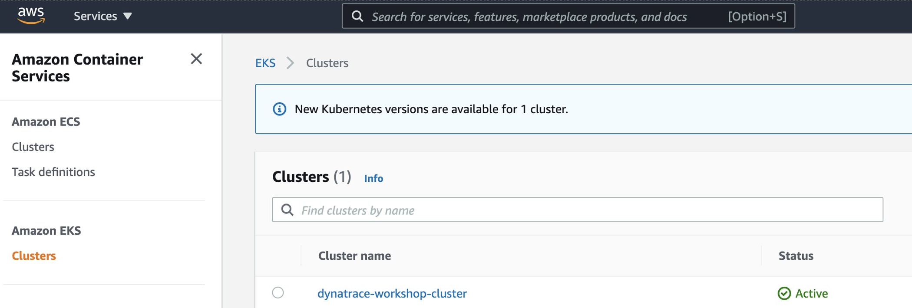

Re-hosting (also referred to as lift and shift) is a common migration use case. Re-architecture and Re-platform are steps that break the traditional architectures and replace individual components with cloud services and microservices.
We just learned how we can get great information on services, processes and user requests using Dynatrace and OneAgent. This helps us now decide what individual features or complete applications based on business benefits we need to migrate and modernize. The idea here is to focus on feature-based business benefit with functional migration.
Objectives of this Lab
üî∑ Install the Dynatrace Operator and sample application
üî∑ Review how the sample application went from a simple architecture to multiple services
üî∑ Examine the transformed application using service flows and backtraces
As we saw earlier, the sample application is a three-tiered application –> frontend, backend, database.
For our lab, another version of the application exists that breaks out each of these backend services into separate services. By putting these services into Docker images, we gain the ability to deploy the service into modern platforms like Kubernetes and AWS services such as the ones shown below.

Kubernetes
Kubernetes is open source software that allows you to deploy and manage containerized applications at scale.
Kubernetes manages clusters of compute instances and runs containers on those instances with processes for deployment, maintenance, and scaling. Using Kubernetes, you can run any type of containerized applications using the same toolset on-premises and in the cloud.
You can read more about Kubernetes here
Amazon Elastic Kubernetes Service
AWS makes it easy to run Kubernetes. You can choose to manage Kubernetes infrastructure yourself with Amazon EC2 or get an automatically provisioned, managed Kubernetes control plane with Amazon EKS. Either way, you get powerful, community-backed integrations to AWS services like VPC, IAM, and service discovery as well as the security, scalability, and high-availability of AWS.
Amazon EKS runs Kubernetes control plane instances across multiple Availability Zones to ensure high availability. Amazon EKS automatically detects and replaces unhealthy control plane instances, and it provides automated version upgrades and patching for them.
Amazon EKS is also integrated with many AWS services to provide scalability and security for your applications, including the following:
- Elastic Load Balancing for load distribution
- IAM for authentication
- Amazon VPC for isolation
- Amazon ECR for container images
For this workshop you are going to use Amazon EKS managed service that makes it easy for you to run Kubernetes on AWS without needing to stand up or maintain your own Kubernetes control plane.
Lab Setup
Refer to the picture below, here are the components for lab 2.

#1 . Sample Application Sample app representing a "services" architecture of a frontend and multiple backend services implemented as Docker containers that we will review in this lab.
#2 . Kubernetes Amazon Elastic Kubernetes Service (EKS) is hosting the application. The Kubernetes cluster had the Dynatrace OneAgent Operator installed. (see below for more details). Two EKS nodes make up the Kubernetes cluster. The Dynatrace OneAgent was preinstalled by the OneAgent operator and is sending data to your Dynatrace SaaS environment. (see below for more details)
#3 . Dynatrace Operator Dynatrace OneAgent is container-aware and comes with built-in support for out-of-the-box monitoring of Kubernetes. Dynatrace supports full-stack monitoring for Kubernetes, from the application down to the infrastructure layer.
#4 . Dynatrace Dynatrace tenant where monitoring data is collected and analyzed.
#5 . Full-Stack Dashboard Made possible by the Dynatrace OneAgent that will automatically instrument each running node & pod in EKS.
#6 . Kubernetes Dashboard The Kubernetes page provides an overview of all Kubernetes clusters showing monitoring data like the clusters' sizing and utilization.  
Beyond the Lab
Over time, you can imagine that this sample application will be further changed to add in other technologies like AWS Lambda functions and other PaaS services like AWS RDS or Aurora databases and virtual networking Application gateways as shown in the picture below.

This step extends what you did in the previous step and will provision an Amazon Elastic Kubernetes Service (EKS) cluster and the Dynatrace configuration needed for the workshop.
There are the following setup steps for this lab: 1. Install the pre-requisite tools 1. Setup Dynatrace config 1. Create Cluster 1. Verify Cluster 1. Install Dynatrace Kubernetes Operator 1. Install sample application
NOTE: The step Create Cluster will take ~30 minutes to complete while the EKS cluster is provisioning.
Install the pre-requisite tools
- Start by installing
eksctl, a simple command line utility for creating and managing Kubernetes clusters on Amazon Elastic Kubernetes Service (EKS). You can find out more by checking out the documentation. * https://docs.aws.amazon.com/eks/latest/userguide/eksctl.html
First, make a new folder in your home directory
mkdir -p $HOME/bin
Then install eksctl by copying the repo from github and unzip it in the directory you just created.
curl --silent --location "https://github.com/weaveworks/eksctl/releases/latest/download/eksctl_$(uname -s)_amd64.tar.gz" | tar xz -C $HOME/bin
Check that it is properly installed by checking the version number using the command below.
eksctl version
- Next, install
kubectl. Kubernetes uses this command line utility for communicating with the cluster API server. You can find out more by checking out the documentation * https://docs.aws.amazon.com/eks/latest/userguide/install-kubectl.htmlcurl --silent -o $HOME/bin/kubectl https://amazon-eks.s3-us-west-2.amazonaws.com/1.21.2/2021-07-05/bin/linux/amd64/kubectl - Change the permissions of the new folder to make it executable chmod +x $HOME/bin/kubectl
And check to make sure it installed properly by checking the version
kubectl version --short --client
From the Cloudshell window, run these commands to start the provisioning process:
cd ~/aws-modernization-dt-orders-setup/provision-scripts
./provision-workshop.sh k8
The script output will look like this:
===================================================================
About to Provision Workshop - k8
===================================================================
Proceed? (y/n)
Select Y and when it completes, it will look like this:
...
...
=============================================
Provisioning AWS workshop resources COMPLETE
End: Tue Jun 16 14:42:22 EDT 2020
=============================================
The script will run fast, but it will take about 1-2 minutes for the CloudFormation script to complete.
- Add Management Zones for the monolith and micro services versions of the application
- Add SLOs for a use in custom dashboards
- Add Process Naming Rule to have the services show as namespace-service-name
Once you run the command to create the cluster, it will take 20-30 minutes to fully provision.
- Copy the
eksctl create cluster ...command below and run it. eksctl create cluster –region us-west-2 –with-oidc –ssh-access –version=1.21 –managed –name dynatrace-workshop –tags "Purpose=dynatrace-modernization-workshop" –ssh-public-key
It is OK when you get an error like this...
bash: syntax error near unexpected token `newline'
...because you MUST replace the argument value for --ssh-public-key with your Key Pair name that was automatically created in Lab 1 for the EC2 instance
- To get you Key Pair name that was automatically created in Lab 1 for the EC2 instance, navigate to the
Key Pairspage in the AWS console:
- https://us-west-2.console.aws.amazon.com/ec2/v2/home?region=us-west-2#KeyPairs. The Key Pair name will be something like
jones-dynatrace-modernize-workshopas shown below.

- Copy the Key Pair name and then back in the CLoudShell, click the
up arrow keyboard buttonto get the previous command. - Adjust the
--ssh-public-keyargument and then run the command again.
If you still get an error, first check that you have the correct --ssh-public-key argument value.
5 . Review the output will start to look like this and may take 20-30 minutes to fully provision..
cloudshell-user@ip-10-0-45-241 learner-scripts]$ eksctl create cluster --region us-west-2 --with-oidc --ssh-access --version=1.21 --managed --name dynatrace-workshop --tags "Purpose=dynatrace-modernization-workshop" --ssh-public-key jones-dynatrace-modernize-workshop
2021-09-03 19:26:32 [ℹ] eksctl version 0.64.0
2021-09-03 19:26:32 [ℹ] using region us-west-2
2021-09-03 19:26:32 [ℹ] setting availability zones to [us-west-2a us-west-2b us-west-2d]
2021-09-03 19:26:32 [ℹ] subnets for us-west-2a - public:192.168.0.0/19 private:192.168.96.0/19
2021-09-03 19:26:32 [ℹ] subnets for us-west-2b - public:192.168.32.0/19 private:192.168.128.0/19
2021-09-03 19:26:32 [ℹ] subnets for us-west-2d - public:192.168.64.0/19 private:192.168.160.0/19
2021-09-03 19:26:32 [ℹ] nodegroup "ng-eaa2eae4" will use "" [AmazonLinux2/1.21]
2021-09-03 19:26:32 [ℹ] using EC2 key pair %!q(*string=<nil>)
2021-09-03 19:26:32 [ℹ] using Kubernetes version 1.21
2021-09-03 19:26:32 [ℹ] creating EKS cluster "dynatrace-workshop" in "us-west-2" region with managed nodes
...
...
2021-09-03 19:28:33 [ℹ] waiting for CloudFormation stack "eksctl-dynatrace-workshop-cluster"
2021-09-03 19:29:33 [ℹ] waiting for CloudFormation stack "eksctl-dynatrace-workshop-cluster"
When this command is complete you should see:
2021-09-03 19:51:34 [ℹ] node "ip-192-168-89-237.us-west-2.compute.internal" is ready
2021-09-03 19:53:35 [ℹ] kubectl command should work with "/home/cloudshell-user/.kube/config", try 'kubectl get nodes'
2021-09-03 19:53:35 [✔] EKS cluster "dynatrace-workshop-cluster" in "us-west-2" region is ready
- Also verify the CloudFormation script is also complete within the AWS console.
You can navigate to the CloudFormation page as shown below. 
Or use this link as shortcut to the CloudFormation page
On the CloudFormation page, click on the stack shown.

Then click on Events to see the provisioning steps. As it processes, the statuses will start to show CREATE_COMPLETE

You can monitor this as it runs for about 30 minutes. When it's complete, all statuses will show CREATE_COMPLETE
Only proceed with this next step once the CloudFormation stack shows CREATE_COMPLETE status.
1. Verify Cluster using kubectl
Using the CloudShell, you can verify the new cluster with the kubectl command line tool used to control Kubernetes clusters.
- Run this command to display the command line options
kubectl - Verify you are connected. You should see
dynatrace-workshop-clusteras part of the output.
The output should look like this:kubectl config current-context[user-info]@dynatrace-workshop-cluster.us-west-2.eksctl.io - List the nodes in the cluster
The output should look like this:kubectl get nodes
You can see even more detail with this command.NAME STATUS ROLES AGE VERSION ip-192-168-31-207.us-west-2.compute.internal Ready <none> 5d23h v1.21.2-eks-c1718fb ip-192-168-86-194.us-west-2.compute.internal Ready <none> 5d23h v1.21.2-eks-c1718fbkubectl describe nodes
2. Verify Cluster within AWS Console
With the AWS Console, search for the Elastic Kubernetes Service or click on the link below.

The cluster page, click on the new workshop cluster. You should see two nodes as shown below.
Explore the configuration and view nodes details. ## Kubernetes Dynatrace Operator
One key Dynatrace advantage is ease of activation. OneAgent technology simplifies deployment across large enterprises and relieves engineers of the burden of instrumenting their applications by hand. As Kubernetes adoption continues to grow, it becomes more important than ever to simplify the activation of observability across workloads without sacrificing the deployment automation that Kubernetes provides. Observability should be as cloud-native as Kubernetes itself.
In our workshop, we will install the Dynatrace Operator that streamlines lifecycle management. You can read more about it here in this Dynatrace blog.
Organizations will often customize the Dynatrace Operator installation and you can read more about the options in the Dynatrace docs but, we are going to use a single command that we can get from the Dynatrace interface to show how easy it is to get started.
One key Dynatrace advantage is ease of activation. OneAgent technology simplifies deployment across large enterprises and relieves engineers of the burden of instrumenting their applications by hand. As Kubernetes adoption continues to grow, it becomes more important than ever to simplify the activation of observability across workloads without sacrificing the deployment automation that Kubernetes provides. Observability should be as cloud-native as Kubernetes itself.
In our workshop, we will install the Dynatrace Operator that streamlines lifecycle management. You can read more about it here in this Dynatrace blog.
Organizations will often customize the Dynatrace Operator installation and you can read more about the options in the Dynatrace docs but, we are going to use a single command that we can get from the Dynatrace interface to show how easy it is to get started.
Install Dynatrace Operator
- To navigate to Kubernetes page, follow these steps and refer to the picture below:
- Within Dynatrace, click on the
Deploy Dynatracemenu - Click on the
Start Installationbutton - Click on the
Kubernetesbutton

- Within Dynatrace, click on the
- To get the Dynatrace Operator installation command, refer to the steps and pictures below:
- On the Kubernetes configuration page, enter
dynatrace-workshopfor the name. This is not the cluster name, it will show up as the Kubernetes page name in Dynatrace - Click the
Create tokensbutton - Select the
Skip SSL Certificate Checkto be ON - Click the
Copybutton

- On the Kubernetes configuration page, enter
- Paste the command in SSH Shell and run it. When you run the command, it will do the following:
- Create a namespace called
dynatracein your cluster containing the Dynatrace Operator supporting pods - Set the OneAgent on each of the cluster nodes as to provide full-stack Dynatrace monitoring
- Create a Kubernetes dashboard that will be populated with the Kubernetes data pulled from the API
- Setup a Dynatrace Active gate that runs as a container in the
dynatracenamespace that is used in the polling of Kubernetes API - Enable preset out-of-the-box Kubernetes dashboards
- Create a namespace called
Verify Dynatrace Operator
Once the script is complete, then monitor the installation until you all pods are in Running state with all pods as 1/1.
kubectl -n dynatrace get pods
Rerun the command until the output looks like this:
NAME READY STATUS RESTARTS AGE
dynakube-classic-g5n9d 1/1 Running 0 2m45s
dynakube-classic-vr5qh 1/1 Running 0 2m45s
dynakube-kubemon-0 1/1 Running 0 2m43s
dynakube-routing-0 1/1 Running 0 2m45s
dynatrace-operator-f946fb4c6-q5k5g 1/1 Running 0 3m59s
Verify Dynatrace Monitoring
We will review more detail shortly, but quickly verify within Dynatrace that the hosts are now monitored.
From the left-side menu in Dynatrace choose Hosts. Ensure the management zone filter is set to all ALL

You should see the two hosts like the ones shown below in addition to the host with the name dt-orders-monolith.

Dynatrace automatically derives tags from your Kubernetes/OpenShift labels. This enables you to automatically organize and filter all your monitored Kubernetes/OpenShift application components.
To review what is configured for the sample application, go ahead and open this folder and look at one such as the frontend.yml:
Notice the labels and annotations:
metadata:
labels:
app.kubernetes.io/name: frontend
app.kubernetes.io/version: "1"
app.kubernetes.io/component: frontend
app.kubernetes.io/part-of: dt-orders
app.kubernetes.io/managed-by: helm
app.kubernetes.io/created-by: dynatrace-demos
annotations:
owner: Team Frontend
chat-channel: dev-team-frontend
Notice the defined container and version. These containers are stored in Dockerhub.
spec:
containers:
- name: frontend
image: dtdemos/dt-orders-frontend:1
Notice the DT_CUSTOM_PROPS environment variable:
env:
- name: DT_CUSTOM_PROP
value: "project=dt-orders service=frontend"
Run the script to deploy the sample application
Back in the SSH shell, run these commands to deploy the application:
cd ~/aws-modernization-dt-orders-setup/app-scripts
./start-k8.sh
- Create a namespace called
stagingwhere all these resources will reside - Grant the Kubernetes default service account a viewer role into the
stagingnamespace - Create both the
deploymentandserviceKubernetes objects for each of the sample
Verify the pods are starting up
Rerun this command until all the pods are in Running status with all pods as 1/1.
kubectl -n staging get pods
The output should look like this:
NAME READY STATUS RESTARTS AGE
browser-traffic-5b9456875d-ks9vw 1/1 Running 0 30h
catalog-7dcf64cc99-hfrpg 1/1 Running 0 2d8h
customer-8464884799-vljdx 1/1 Running 0 2d8h
frontend-7c466b9d69-9ql2g 1/1 Running 0 2d8h
load-traffic-6886649ddf-76pqf 1/1 Running 0 2d8h
order-6d4cd477cb-9bvn4 1/1 Running 0 2d8h
Kubernetes Role Binding - Overview
In Kubernetes, every pod is associated with a service account which is used to authenticate the pod's requests to the Kubernetes API. If not otherwise specified the pod uses the default service account of its namespace.
- Every namespace has its own set of service accounts and thus also its own namespace-scoped default service account. The labels of each pod for which the service account has view permissions will be imported into Dynatrace automatically.
- In order for Dynatrace to read the Kubernetes properties and annotations, you need to grant the Kubernetes default service account a viewer role into the
stagingnamespace to enable this. We only have one namespace, but you will need to repeat these steps for all service accounts and namespaces you want to enable for Dynatrace within your environments.
For the workshop, we already updated the required file with the staging namespace. Next you will run the setup script that will apply it to your cluster. Go ahead and open this folder and look at the dynatrace-oneagent-metadata-viewer.yaml file. * https://github.com/dt-alliances-workshops/aws-modernization-dt-orders-setup/tree/main/app-scripts/manifests
Review Kubernetes within Dynatrace
Now lets verify what happened within Dynatrace.
- From the Dynatrace Menu, click
Manage --> Deployment statusto review OneAgent Deployment status - Within the
Deployment statuspage, next click on theActiveGateoption to review the Active Gate.
Review Kubernetes Architecture
From the left-side menu in Dynatrace choose Kubernetes and navigate to the Kubernetes cluster page as shown below:
NOTE: Be sure that your management zone is NOT filtered!

1 - Kubernetes cluster
A summary the Kubernetes cluster is shown at the top of the Kubernetes dashboard.
2 - Nodes
The resources for the Cluster are summarized for the one-to-many hosts or Cluster nodes in this view. Explore specific node in the Node Analysis section, pick the analyze nodes button. 
3 - Namespaces
Note: Namespaces are ways to partition your cluster resources to run multiple workloads (for example application A and application B workloads) on same cluster 1. This workload section shows workloads over time 2. In the Cluster workload section, pick the view all workloads button.

In the filter, pick namespace then staging

4 - Kubernetes workload
Pick the frontend to drill into.

Review the workload overview page to look at various metrics related to the workload.
Click on Kubernetes POD to look at POD utilization metrics.
5 - POD
Review the POD overview page to look at various metrics related to the POD Click on Container next to look at container metrics

6 - Containers
Referring to the diagram above, expand the properties and tags section to view: 1. Container information 2. Kubernetes information 3. In the info graphic, pick the service to open the services list 4. In the service list, click on k8-frontend service

Next click on 2 Services Icon to review the services running inside the container Select the active front-end service.
7 - Service
This view should now look familiar. In Lab 1, we looked at the service for the frontend and backend. Notice how the Kubernetes information is also available in the service properties.

Refer to this picture for a more detailed description of our setup.

1 - Dynatrace Namespace
This Kubernetes Namespace contains the pods and services that make up the Dynatrace Operator.
2 - Kubernetes nodes
Kubernetes runs your workload by placing containers into Pods to run on Nodes.
3 - Dynatrace
Dynatrace tenant where monitoring data is collected and analyzed.
4 - Cloud shell
The shell is configured with the kubectl command line tool that lets you control Kubernetes clusters.
5 - Sample application namespace
This Kubernetes Namespace contains the sample application pods and services.
6 - Sample application
The frontend service is exposed as a public IP and is accessible in a browser.
Review sample app in a browser
To view the application, we need to get the IP to the Kubernetes service for the sample application. To do this, we need to run a kubernetes command.
From the SSH CLI SSH command prompt type this command
kubectl -n staging get svc
Example output
NAME TYPE CLUSTER-IP EXTERNAL-IP
catalog ClusterIP 10.100.181.171 <none>
customer ClusterIP 10.100.147.216 <none>
frontend LoadBalancer 10.100.58.2 a6ebaa4a370e0468093167462c3aeab2-115097342.us-west-2.elb.amazonaws.com
order ClusterIP 10.100.228.17 <none>
From the output, copy the entire value from EXTERNAL-IP and open it in a browser. This would be http://1a6ebaa4a370e0468093167462c3aeab2-115097342.us-west-2.elb.amazonaws.com for the example above.
Explore Sample app
Use the menu on on the home page to navigate around the application and notice the URL for key functionality. You will see these URLs later as we analyze the application.
- Customer List = customer/list.html
- Customer Detail = customer/5.html
- Catalog List = catalog/list.html
- Catalog Search Form = catalog/searchForm.html
- Order List = order/list.html
- Order Form = order/form.html
Open Service Page
First filter by dt-orders-k8 management zone.

Pick the order service.

On this service, we can quickly review the inbound and outbound dependencies.
Referring to the picture, within the services infographic, click on the "services" square to get a list of the services that the order service calls.

Open Backtrace Page
To see the backtrace page, just click on the Analyze Backtrace button.
You should be on the service backtrace page where you will see information for this specific service.
This will get more interesting in the next lab, but for the monolith backend, we can see that the backtrace is as follows:
1 . The starting point is the backend
2 . Backend service is called by the front-end
3 . Front-end is a where end user requests start and the user sessions get captured
4 . My web application is the default application that Dynatrace creates

üëç How this helps
The service flow and service backtrace give you a complete picture of interdependency to the rest of the environment architecture at host, processes, services, and application perspectives.
Analyze the Service Flow
Now that we are back on the frontend service, let's look at the service flow to see what's different now. Just click on the view service flow button to open this.

Response time perspective
You should now be on the Service flow page.
Right away, we can see how this application is structured: * Frontend calls order, customer, and catalog service * Order service calls order and customer service
Something you would never know from the application web UI!

Refer to the picture above: 1. We are viewing the data from a Response time perspective. Shortly, we will review the Throughput perspective. 2. Click on the boxes to expand the response time metrics. Most of the response time is spent in the order service and the least in the customer services. And as in the simple version of the application, a very small amount of the response time is spent in the databases.
Throughput perspective

Refer to the picture above: 1. Change to the Throughput perspective by clicking on the box 2. Click on the boxes to expand the metrics to see the number of requests and average response times going to each service
üëç How this helps
Reviewing the architecture before and after changes is now as easy as a few clicks!
While migrating to the cloud, you want to evaluate if your migration goes according to the plan, whether the services are still performing well or even better than before, and whether your new architecture is as efficient as the blueprint suggested. Dynatrace helps you validate all these steps automatically, which helps speed up the migration and validation process.
Having the ability to understand service flows enables us to make smarter re-architecture and re-platforming decisions. With support for new technologies like Kubernetes, you have confidence to modernize with a platform that spans the old and the new.
Checklist
In this section, you should have completed the following:
✅ Install the Dynatrace Operator and sample application
✅ Review how the sample application went from a simple architecture to multiple services
✅ Examine the transformed application using service flows and backtraces